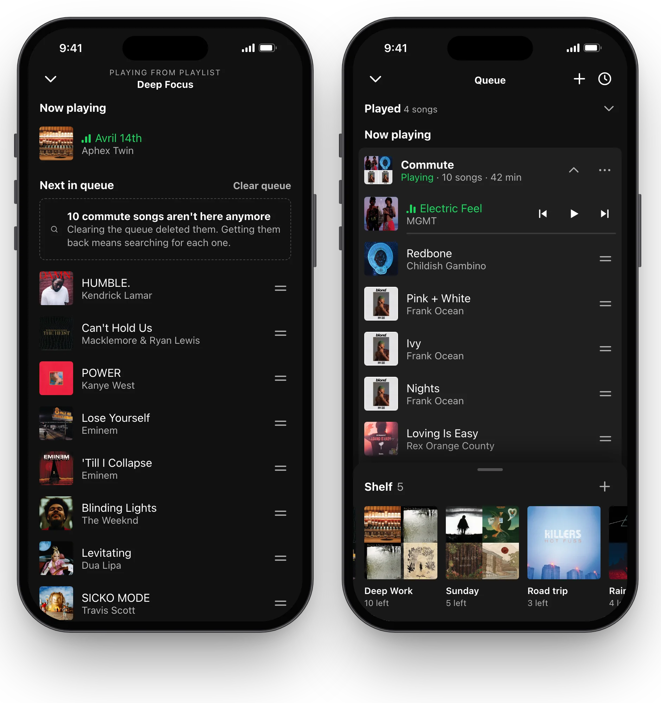
Left is today's queue at the end of a day of switching. Right is the same day with blocks. How often people hit this is still an assumption, so a survey is the first thing in what comes next.
Commute, then work, then the gym. They edit the queue every week and keep throwaway playlists to cope.
They want to go back to music they were in the middle of without rebuilding it.
They never manage the queue. A song they add should play soon, with no new steps.
Every decision was checked against them too. Blocks must never make this slower.
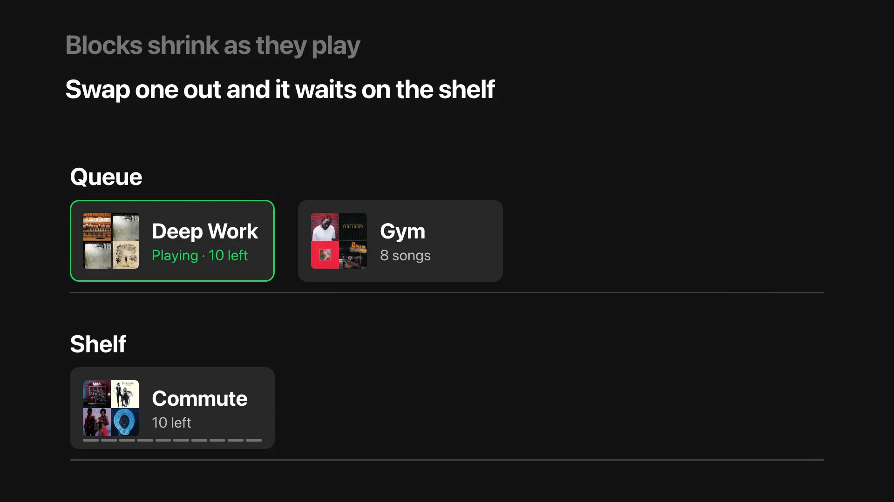
The queue holds what's playing and what's next. The shelf holds the rest, each block where you left it.
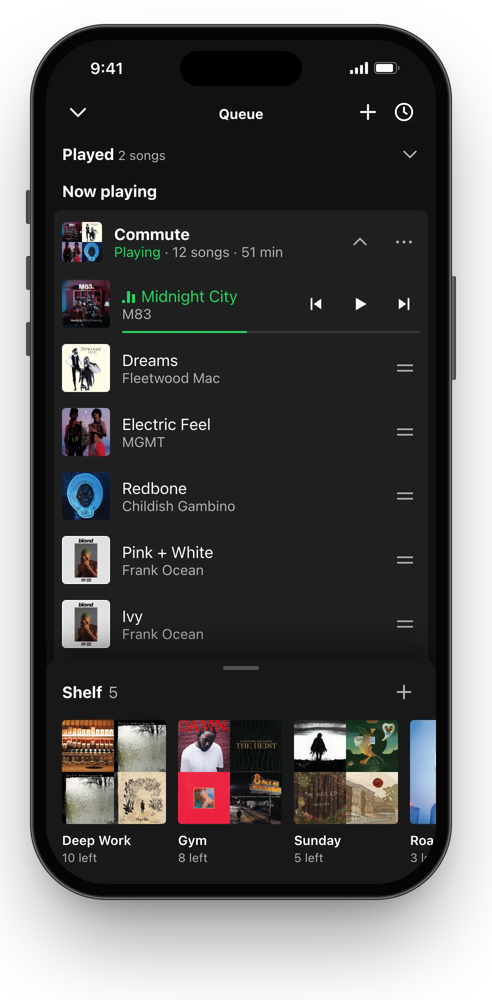
The commute is one block of twelve songs.
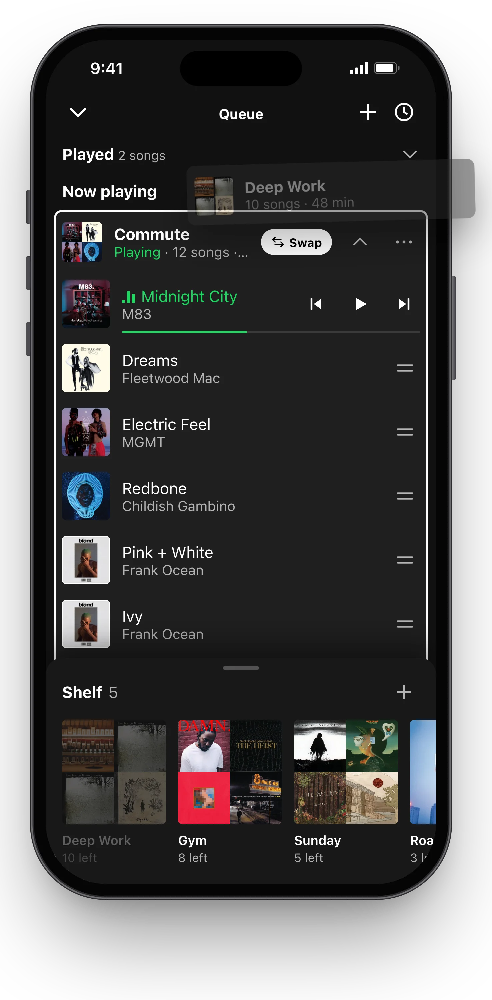
Deep Work swaps in. Commute goes to the shelf with ten left.
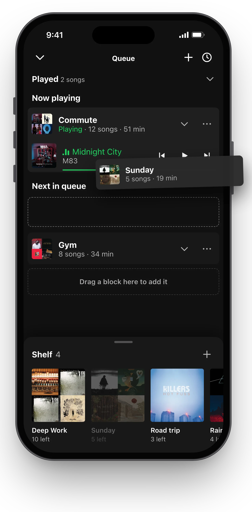
Gym lines up for later. A gap opens where a block will land.
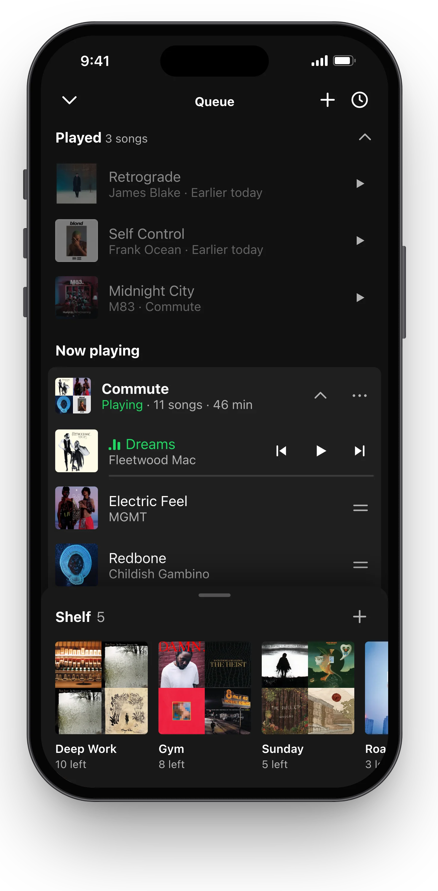
Commute picks up where it stopped. Played shows what you already heard.
The blocks around the pointer slide apart and leave a dashed gap. You can't trust a drop you can't see.
Cost More motion on screen, so the spring is quick and settles in a quarter second.
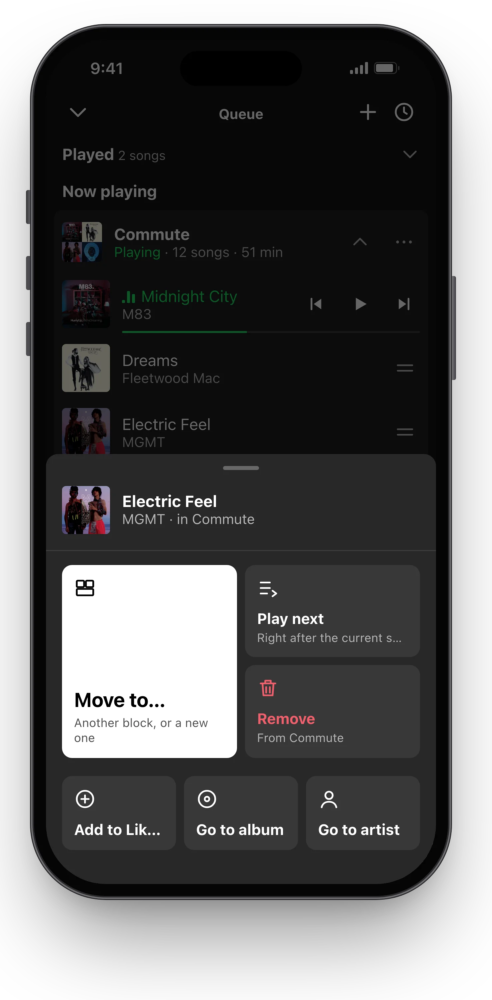
Tap a song for Move to, Play next and Remove. Every block action is in its menu.
Cost Two ways to do one thing. Drag is hard to discover and isn't accessible on its own.
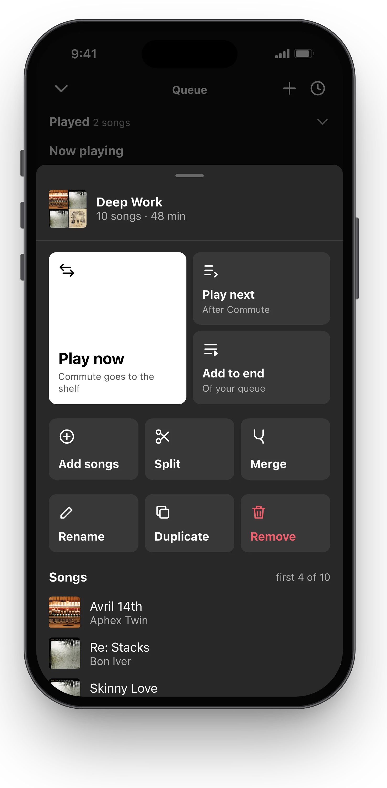
Spotify's long menus give the main action the same weight as the rarest one. Related actions now sit together and the likely one is the big tile.
Cost Less room for labels on rare actions.
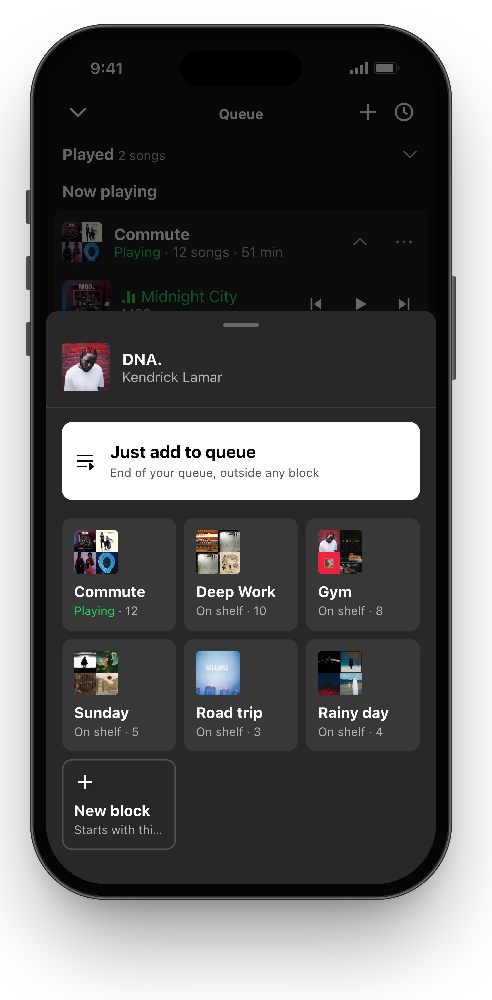
Adding a song asks for a block, but the first tile skips the choice and adds it to the end of the queue.
Cost A loose "Added songs" group that isn't a real block.
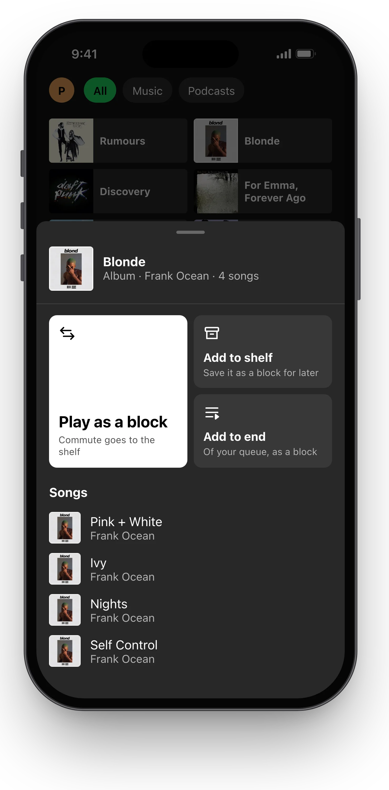
Building blocks song by song was the biggest barrier. People already have albums and playlists.
Cost These blocks skip Keep a copy, since the original still exists.
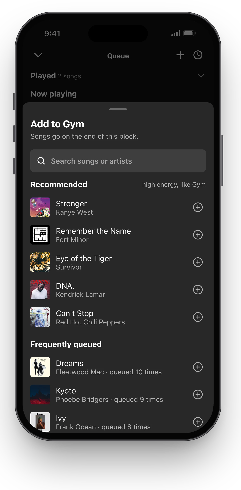
Then a short list matched to the block's mood, then songs you queue often. Nothing else.
Cost Mood comes from the block's songs, so a mixed block gets mixed picks.
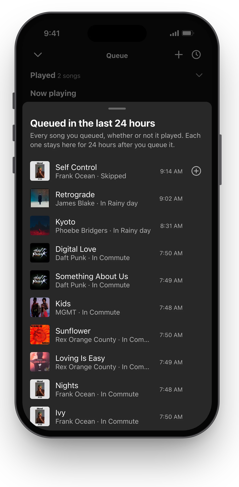
Back returns the last song to its block. Everything you queued in the last 24 hours stays one tap away, played or not.
Cost Played folds to one row and the 24 hour list sits at the end of the shelf, so neither takes space from what's next.
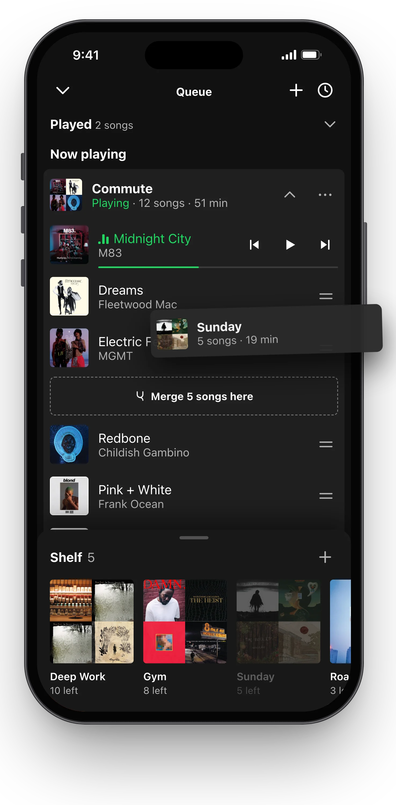
Hovering a block between two songs opens a gap labelled with how many songs will merge in.
Cost One more meaning for a drop, which is why the gap says what it will do.
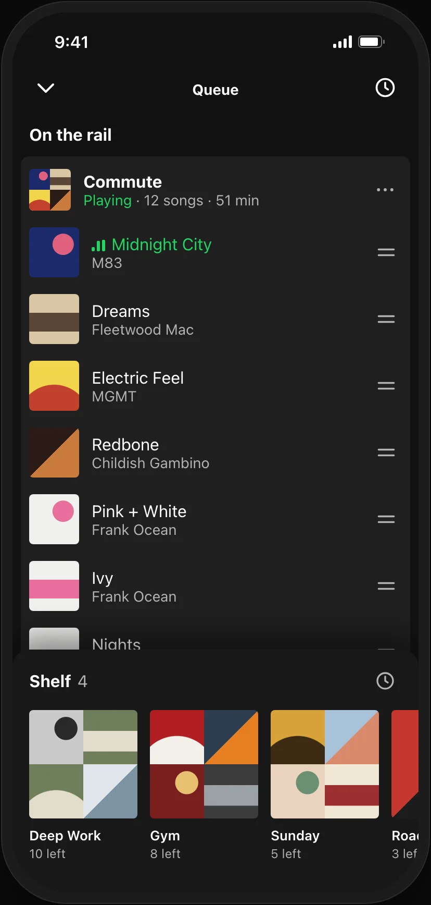
Lives in the queue screen people already use. Chosen.
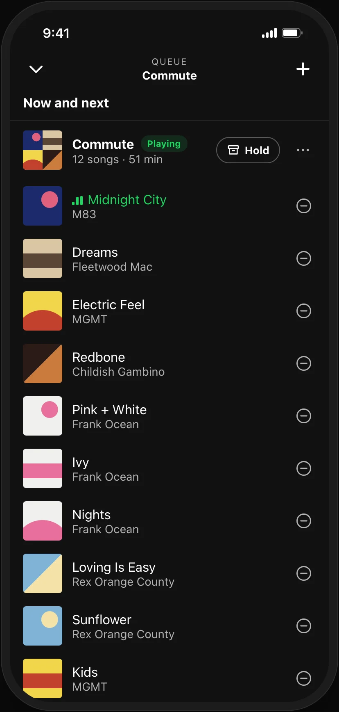
Clear, but the swap hides behind buttons.
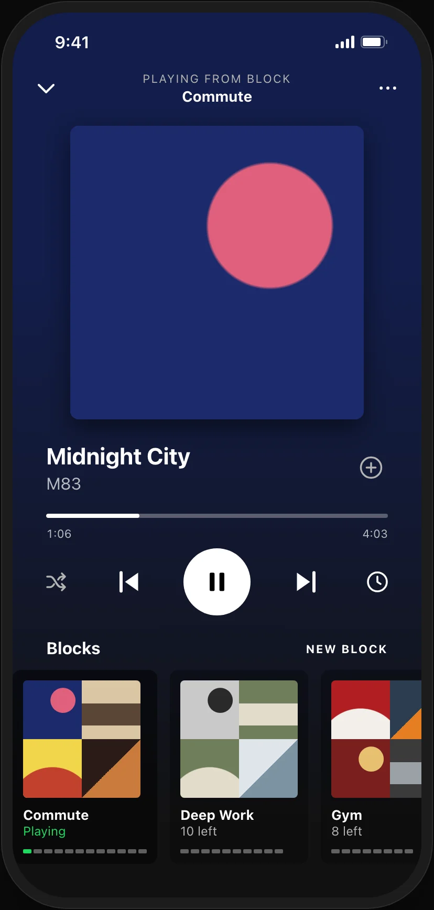
Easy to glance at, but it fights the artwork on Now Playing.
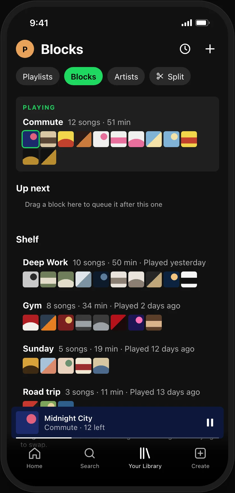
The most expressive, and the furthest from where people queue.
Each round started from walking through the running prototype. These are design reviews, not usability tests with outside participants.
| What came up | What changed |
|---|---|
| "Rail" meant nothing to people | Renamed to Queue, with Now playing and Next in queue |
| Drops felt blind | A gap opens where the block will land |
| Blocks didn't read as lists of songs | Every block folds and unfolds from its header |
| No way to combine blocks at an exact point | Drop between two songs to merge |
| No way back, and the queue forgot | Back, Played, and a 24 hour list of everything queued |
| Adding songs was a dump of lists | Search, then recommended, then frequently queued |
| Action lists were hard to use | Bento menus with related actions together |
| Shelf blocks past the fourth were out of reach mid-drag | Hold at the shelf's edge and it scrolls |
| No sense of how far into the song you were | A thin green meter on the playing row |
| Moving a song was drag only | Tap a song for Move to |
| On a phone, the shelf and queue wouldn't scroll | Blocks drag on a short hold, swipes scroll |
| Edges scrolled while you passed through them | Edge scrolling waits for a short rest |
| Toasts blocked taps on the songs beneath | Only the toast's buttons take taps |
Blocks, the shelf, swap, shrinking as songs play, the block picker with Just add to queue, albums as blocks
The insert gap, folding, Back and Played, the 24 hour list, Move to
Split, merge, duplicate, rename, Keep a copy, shelf cleanup
Shuffle inside a block, shared Jam queues, syncing the shelf across devices
These are targets to test, not results. Nothing here has been measured yet.
After the second task each person says how a block differs from a playlist. If they can't, the concept needs work before anything else does.